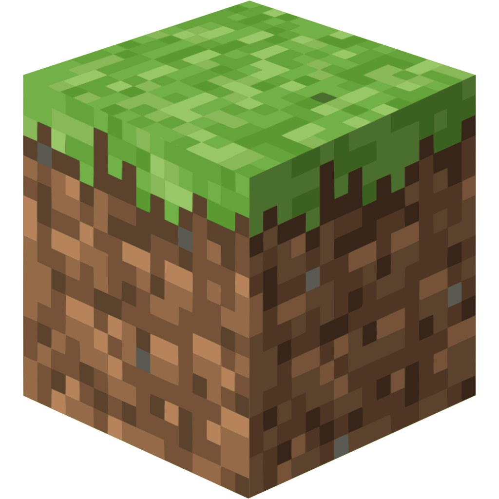
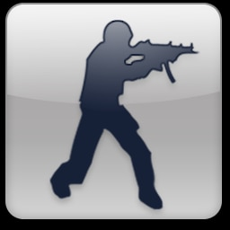
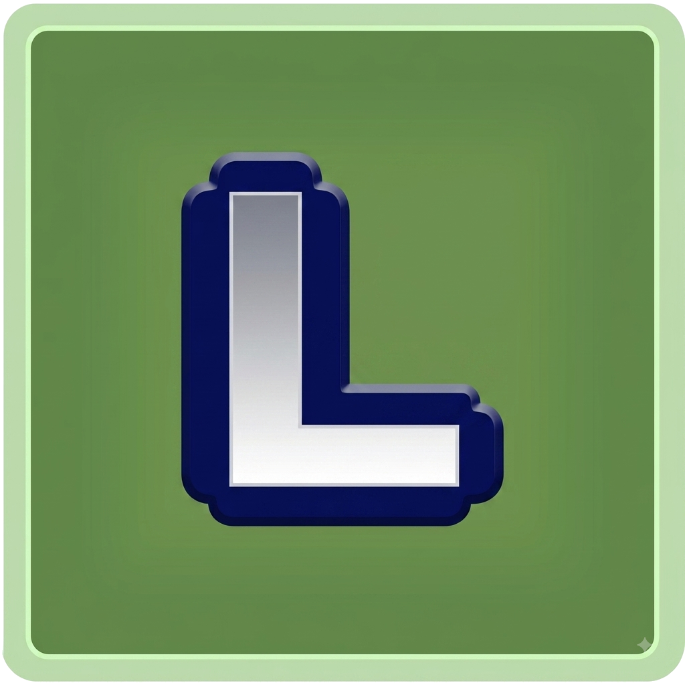

Los clasicos
nunca pasan de moda.
Minecraft, Counter-Strike 1.6 y Haxball, listos para conectarte. Copiá la IP y jugá.

Minecraft
Tres modos, una sola red.
Survival
SemiOP · versión 1.12.2 - 26.2
mc.leianet.ar
Creativo
Modo creativo libre · versión 1.21.1
creative.leianet.ar
PVP
Combate PVP clásico · versión 1.8.9
pvp.leianet.ar

Counter-Strike 1.6
Tres modos clásicos, sin vueltas.
CS 1.6
Rotación de mapas estándar
cs.leianet.ar
Only Dust2
Solo de_dust2, sin rotación
dust2.leianet.ar
Deathmatch
Respawn instantáneo, acción directa
deathmatch.leianet.ar

Haxball
Salas abiertas, entrá y jugá.
2v2 Gana y Sigue
El que gana se queda, el que pierde va a la cola
haxball.com/play?c=8iR0NbBS2lU
3v3 Gana y Sigue
El que gana se queda, el que pierde va a la cola
haxball.com/play?c=48Y7wwKMqQI
4v4 Gana y Sigue
El que gana se queda, el que pierde va a la cola
haxball.com/play?c=bi-l9o6SqI4
Sala Pública
Entrada libre, se juega al toque
haxball.com/play?c=9Ye3qTohxLk
Cafecito
Apoyá el proyectoBienvenido al Cafecito de LeiaNET.
Acá podés apoyar el costo del dominio y el hosting de los servidores, cualquier cantidad ayuda a mantener todo online.
En un futuro se darán recompensas a los usuarios que donen. Al donar, poné tu nombre de Discord en la descripción de la donación para aparecer en el top. ☕
¿A dónde va tu cafecito?
Preguntas frecuentes
FAQ¿Qué es LeiaNET?
LeiaNET o LeiaNETWORK es una red de servidores y proyectos online creada para reunir distintos servicios y comunidades bajo una misma plataforma. Actualmente está enfocada principalmente en servidores de Minecraft, CS 1.6 y otros proyectos relacionados con gaming, administrados y mantenidos de forma independiente.
¿Cómo surgió LeiaNET?
LeiaNET surgió a partir de la idea de crear y administrar servidores propios, empezando con proyectos de Minecraft y expandiéndose progresivamente a otros juegos y servicios. Con el tiempo, el proyecto fue creciendo hasta convertirse en una red con infraestructura propia, dominio y distintos servidores bajo una misma identidad.
¿Los servidores son gratuitos?
Sí. Los servidores de LeiaNET están pensados para que cualquiera pueda jugar sin tener que pagar una membresía para acceder a ellos. El proyecto es independiente y su infraestructura es administrada por el equipo de LeiaNET.
¿Cómo me conecto a los servidores?
Cada servidor cuenta con su propia dirección de conexión. Próximamente podrás encontrar todas las direcciones, versiones y datos necesarios para conectarte desde la sección de servidores de la web. La idea es que puedas entrar fácilmente sin tener que buscar IPs por distintos lugares.
¿Dónde reporto un problema o bug?
Si encontrás un problema, bug o comportamiento extraño en alguno de los servidores, podés reportarlo por nuestro discord oficial. Al informar un problema, intentá indicar qué ocurrió, en qué servidor sucedió y, si es posible, incluir capturas o información adicional que ayude a encontrar la causa.
¿Van a agregar más servidores?
Sí. LeiaNET es un proyecto en constante expansión, por lo que está previsto incorporar nuevos servidores y servicios con el tiempo. La idea es seguir sumando juegos y proyectos a la red a medida que la infraestructura y la comunidad crezcan.
¿Necesitás algo?
HablemosEscribime un mail
Dudas, reportes o propuestas para la red, respondo apenas puedo.
soporte@leianet.arSumate al Discord
Anuncios, soporte, reportes de bugs y toda la comunidad de LeiaNET.
Unirme al servidor
Redes sociales
Seguinos